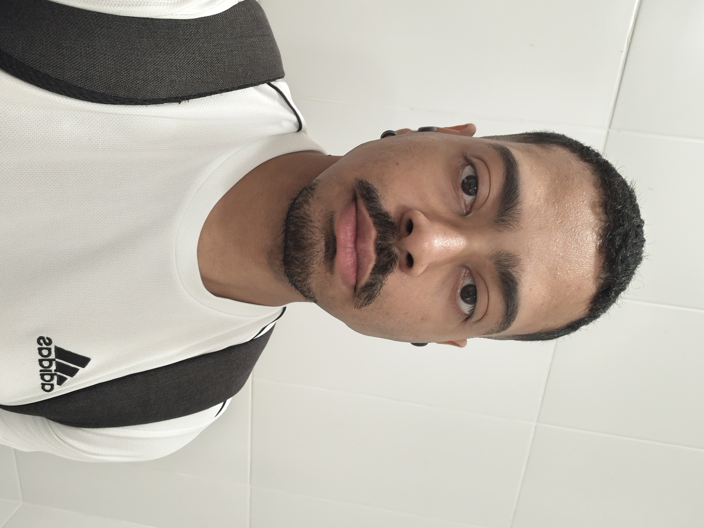
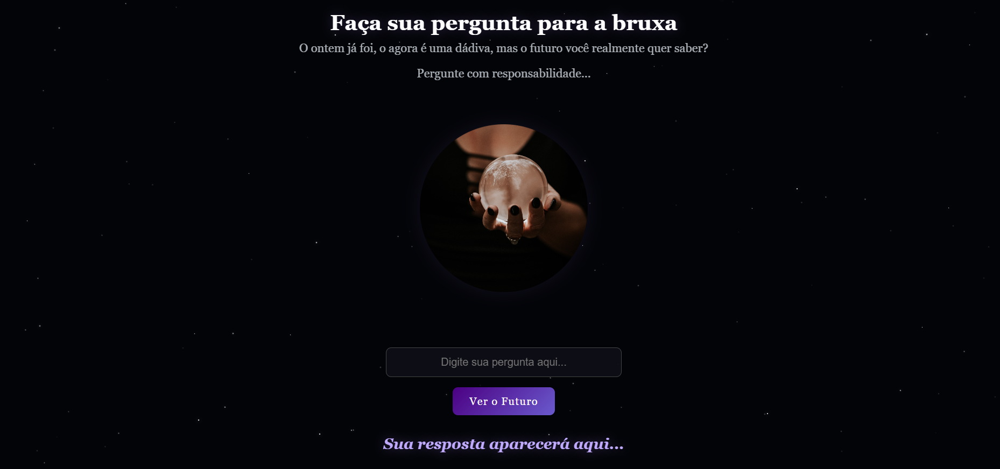

RESUMO PROFISSIONAL
Cursando Análise e Desenvolvimento de Sistemas (Estácio) e Técnico em Informática para Internet (Senac SP).
Tenho 2 anos de experiência prática em Suporte Técnico Remoto na operação Fiserv (via Atento), atuando com atendimento via chat e telefone, diagnóstico de incidentes de hardware e software, conectividade de redes, acesso remoto e parametrização de terminais de pagamento (POS).
Possuo vivência no suporte e utilização de sistemas ERP e CRM, além de prática em manipulação e tratamento de dados corporativos e biológicos. Conto com conhecimentos fundamentais de Banco de Dados (SQL), lógica de programação e desenvolvimento web (HTML5, CSS3, JavaScript). Destaco-me pela capacidade analítica, comunicação clara, foco no usuário e agilidade na resolução de problemas técnicos.
Objetivo: Busco oportunidades de Estágio em TI / Desenvolvimento ou atuações em Help Desk, Service Desk, Análise de Dados e Suporte Técnico.
HABILIDADES TÉCNICAS
- Sistemas & Suporte: ERP, CRM, Zendesk, Help Desk N1/N2, Suporte Remoto, Hardware, POS.
- Desenvolvimento Web: HTML5, CSS3, JavaScript, DOM, Git/GitHub, Figma.
- Banco de Dados & Análise: SQL / PostgreSQL (Básico), Power BI.
- Pacote Office / Microsoft 365.
- Inglês
Formações Acadêmicas
- Análise e Desenvolvimento de Sistemas | Estácio (1º Semestre - EAD)
- Técnico em Informática para Internet | Senac SP (1º Semestre - Presencial)
- Hardware e Manutenção de Computadores | SENAI / CESPAT (Concluído)
- Biomedicina | Estácio de Sá (Concluído)
EXPERIÊNCIA PROFISSIONAL
Técnico Remoto (Operação Fiserv) | Atento Brasil, São Paulo, SP
2 anos de atuação em atendimento e suporte técnico remoto para resolução de chamados de hardware, software e conectividade; acesso remoto e configuração de terminais de pagamento (POS).
Auxiliar de Laboratório | AFIP (Unidade Ricardo Jafet), São Paulo, SP
Atuação com foco em precisão analítica, controle de qualidade, processamento e triagem de amostras, garantindo a integridade dos dados e o cumprimento de protocolos rigorosos.
Estagiário de Biomedicina | FEMME (Medicina da Mulher), São Paulo, SP
Triagem de amostras biológicas, auditoria e correção de guias e pré-faturamento de múltiplos convênios. Foco em precisão analítica e manipulação de dados em sistemas internos.
Auxiliar de Farmácia | Drogaria São Paulo, São Paulo, SP
Atendimento ao cliente, resolução de dúvidas, suporte no uso de sistemas internos e gerenciamento de estoque.
Projeto integrador Senac
Oliva Finance Dashboard Financeiro & Simulador de Orçamento - Projeto Senac
Aplicação web responsiva desenvolvida do zero para controle e planejamento financeiro pessoal. Permite gerenciar receitas e despesas variáveis, calcular a capacidade de economia em tempo real e simular o impacto de compras parceladas (1x a 21x) na renda mensal com alertas visuais de risco.
Tecnologias: HTML5 Semântico, CSS3 (Grid/Flexbox, Variáveis, Tema Claro/Escuro) e JavaScript Puro (Vanilla JS).
Recursos: Persistência de dados local via localStorage, interface mobile-first em tons Verde Oliva e cálculo dinâmico de orçamento.

Link do projeto
Meus projetos
Aqui está o meu primeiro projeto utilizando HTML, CSS e JavaScript. Criei um site inspirado na bola 8 mágica, no qual você realiza uma pergunta e a "bruxa" dá uma resposta.

Link do projeto